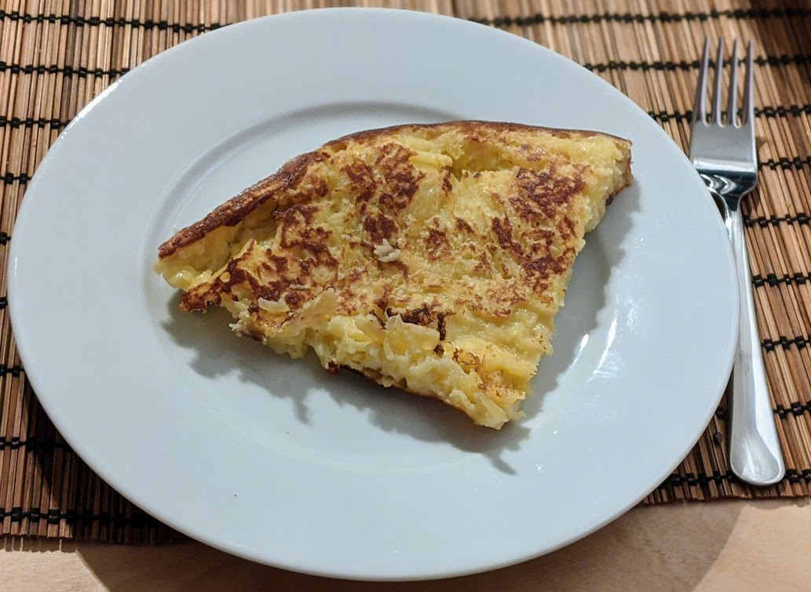

Bouligou

Pour 3 personnes :
- Une grosse pomme
- Deux cuillères à café de sucre
- Trois cuillères à soupe de farine (un peu bombées)
- Quatre cuillères à soupe de lait
- Deux oeufs
- Une noisette de beurre
- (Facultatif) Un trait de rhum
- (Facultatif) Un peu de cannelle
- Éplucher et râper la pomme grossièrement (ou la couper en tout petits morceaux), la mettre dans un saladier.
- Ajouter tous les autres ingrédients, à part le beurre. Si possible, laisser reposer 20 minutes (on peut aussi faire reposer plus longtemps au frais).
- Faire chauffer le beurre au fond d'une poêle anti-adhésive (pas trop petite, disons 24cm de diamètre minimum) à feu moyen-fort. Quand c'est bien chaud, ajouter la pâte et l'étaler à la cuillère pour qu'il y ait la même quantité de pomme partout.
- Lorsque les bords sont bien colorés et qu'il y a quelques bulles dessus, retourner le tout (soit à la spatule, soit en la faisant sauter comme une crêpe) et cuire l'autre face quelques minutes.
- Déguster immédiatement, par exemple en saupoudrant de sucre glace.
Remarque : les proportions ne sont pas très précises, c'est pas vraiment
une recette dont l'exactitude des quantités est importante ^^
Retour à la liste des recettes